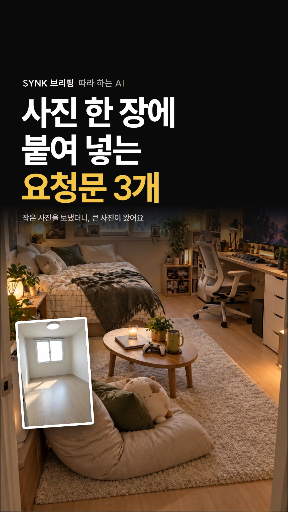
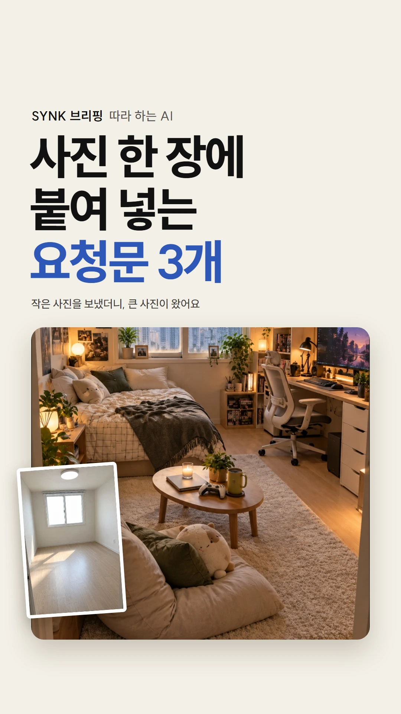
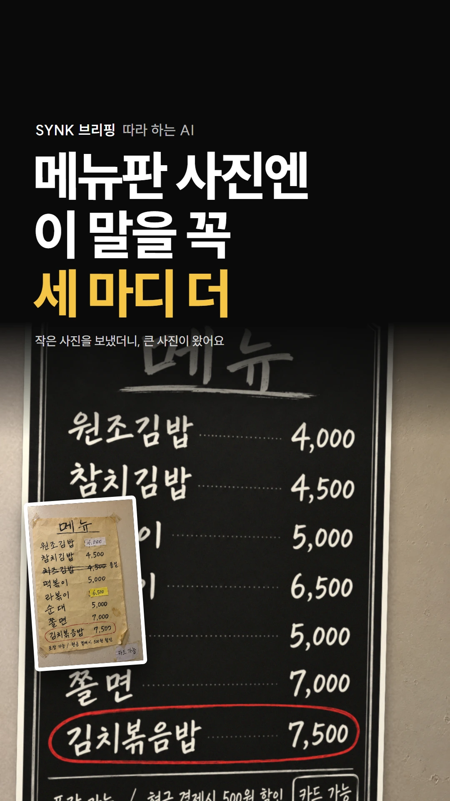
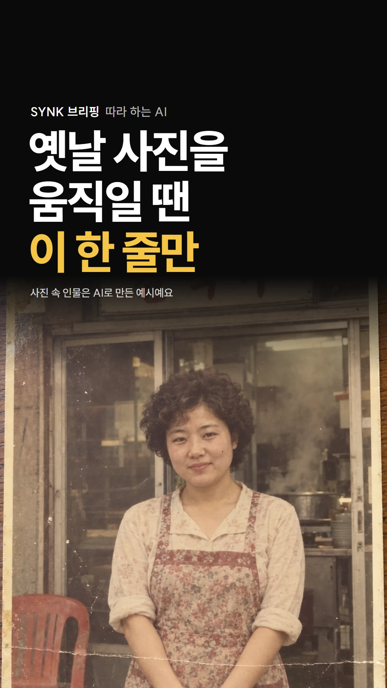

계정 개편 첫 편 시안
두 계정의 첫 편을 한 편씩 만들었습니다. 표지 틀, 캡션, 댓글 단 분께 보낼 자료가 들어 있습니다. 아직 올린 것은 없고 장부도 바꾸지 않았습니다.
- 1synkbrief 표지는 A와 B 가운데 어느 쪽으로 할까요? 추천 A
- 2yuhobuilds 표지는 A와 B 가운데 어느 쪽으로 할까요? 추천 A
- 3댓글 안내는 「댓글에 남겨 주세요」와 「팔로우하고 댓글에 남겨 주세요」 가운데 어느 쪽으로 할까요? 시안은 앞의 것으로 썼습니다.
synkbrief · 따라 하는 AI
초보자가 사진 한 장으로 바로 따라 하는 편입니다. 요청문 셋 모두 이 계정이 10월에 직접 해 보고 올렸던 것입니다.
표지

결과 사진이 화면 끝까지 찹니다. 11월 3일에 정하신 검정 · 흰색 · 버터색 한 곳을 따랐습니다.

밝은 종이 바탕입니다. 글자가 먼저 읽히고 사진은 작아집니다.
프로필 격자에서 보이는 모습


A 틀을 세 편에 쓴 모습입니다. 둘째와 셋째 칸의 제목은 예시입니다.
릴스
빈 방이 채워진 방으로 바뀌는 장면으로 시작합니다. 이어서 메뉴판과 옛날 사진의 전후를 2~3초씩 보입니다. 세 편에서 이미 찍어 둔 실제 화면을 쓰고, 길이는 20초 안팎입니다.
캡션
빈 방 사진 한 장에 한 줄을 붙여 보냈더니, ChatGPT가 방을 통째로 채워 줬어요. 사진 한 장만 있으면 되는 요청문 3개를 모았어요. 셋 다 직접 해 본 것만 넣었어요. 1. 빈 방 사진 → 내가 좋아할 물건으로 채운 방 2. 손글씨 메뉴판 사진 → 인쇄해서 붙일 새 메뉴판 3. 옛날 사진 → 살짝 웃으며 움직이는 영상 댓글에 「사진」이라고 남겨 주세요. 요청문 3개와 쓰는 법을 DM으로 보내 드려요. 팔로우해 두시면 다음 자료도 바로 받아요. · 1번과 2번은 ChatGPT, 3번은 제미나이 앱에서 했어요. 3번은 Google AI 요금제가 있어야 하고 만 18세 이상만 써요. · 결과는 사람마다, 할 때마다 달라요. · 영상 속 빈 방 · 메뉴판 · 옛날 사진은 예시로 만든 그림이고, 결과는 실제로 받은 거예요. #챗GPT #제미나이 #AI활용 #AI초보 #프롬프트
댓글 단 분께 가는 첫 DM
「사진」 남겨 주셔서 고마워요! 사진 한 장에 붙여 넣는 요청문 3개예요. 사진을 올리고 요청문을 그대로 붙여 넣으면 돼요. 1번과 2번은 ChatGPT, 3번은 제미나이 앱이에요. (자료 주소) 자동으로 보낸 메시지예요. 그만 받으려면 '중단'이라고 보내 주세요.
10월 18일에 승인하신 DM 틀 그대로입니다.
나눌 자료 · 사진 한 장에 붙여 넣는 요청문 3개
네가 아는 나를 바탕으로, 내가 좋아할 만한 물건들로 이 방을 채워 줘
빈 방 사진 한 장과 함께 보냅니다.
해 본 결과(10월 27일): 게임 패드, 헤드폰, 포스터, 식물, 인형이 들어간 방이 나왔어요. 메모리가 꺼져 있거나 나눈 대화가 적으면 무난한 방이 나올 수 있어요.
이 메뉴판 사진으로, 가게에 인쇄해서 붙일 깔끔한 메뉴판을 새로 만들어 줘. 메뉴 이름과 가격은 지금 적힌 그대로(스티커로 고친 가격 포함) 한 글자도 바꾸지 말고, 줄 그어 지운 메뉴는 빼고, 쪽지 내용도 빠짐없이 넣어 줘. 음식 사진이나 그림은 넣지 마.
붙이기 전에 원래 사진과 한 줄씩 맞춰 봅니다. 빠진 것이 있으면 「○○가 빠졌어. 다른 건 하나도 바꾸지 말고 그것만 넣어 줘」라고 보냅니다.
해 본 결과(10월 30일): 「한 글자도 바꾸지 마」만 썼을 때는 품절로 지운 메뉴가 살아나고 쪽지가 빠졌어요. 위 요청문으로는 맞게 나왔어요.
얼굴은 그대로 두고, 살짝 웃으며 눈을 한 번 깜빡이는 정도로만 움직여 줘. 카메라는 고정.
사진을 올리고 비율을 「세로」로 고른 뒤 위 한 줄을 붙입니다. 권리가 있는 사진만 올립니다.
해 본 결과(10월 30일): 「살아 움직이게 해 줘」만 썼을 때는 처음 듣는 목소리로 말을 하고 얼굴이 달라졌어요. 위 한 줄을 붙이자 말 없이 얼굴 그대로 살짝 웃었어요.
yuhobuilds · AI와 회사 만들기
유호님이 AI한테 일을 맡기다 막히거나 사고가 난 뒤에 만든 말 다섯 개를 묶은 편입니다. 다섯 개 모두 synk.im/prompts에 이미 공개돼 있습니다.
표지

11월 2일에 고르신 얼굴입니다. 조사한 계정에서는 사람이 나온 표지의 재생이 더 높았습니다.

얼굴 없이 붙이는 말을 그대로 보입니다. 무엇을 받는지가 표지에서 읽힙니다.
프로필 격자에서 보이는 모습


A 틀을 세 편에 쓴 모습입니다. 둘째와 셋째 칸의 제목은 예시이고, 숫자는 실제로 있었던 일에서 가져왔습니다.
릴스
진행자가 「53기가를 지우라던 AI, 진짜는 6.7기가였어요」로 시작합니다. 이어서 붙이는 말 다섯 개가 한 줄씩 큰 글자로 나옵니다. 길이는 25초 안팎입니다.
캡션
AI한테 PC 정리를 맡겼더니 53기가를 치워도 된다고 했어요. 끝까지 따라가 보니 정말 지워도 되는 건 6.7기가뿐이었어요. 그 뒤로 AI한테 일을 맡길 때 끝에 꼭 붙이는 말이 생겼어요. 막히거나 사고가 난 뒤에 하나씩 만든 다섯 개예요. 1. 글을 맡길 때 — 없는 후기와 숫자를 지어내지 않게 2. 올리기를 맡길 때 — 내가 승인하기 전엔 안 올리게 3. 정리를 맡길 때 — 지우지 말고 옮겨 두게 4. 홈페이지를 맡길 때 — 다 똑같은 화면이 안 나오게 5. 자동화를 맡길 때 — 「완료」 대신 실제로 늘어난 개수를 적게 댓글에 「한마디」라고 남겨 주세요. 다섯 개 전문과 제가 돌려 본 결과를 DM으로 보내 드려요. 팔로우해 두시면 다음 자료도 바로 받아요. · 다섯 개 모두 새 대화에 직접 붙여 넣어 돌려 봤어요. AI마다, 할 때마다 결과는 달라요. #AI활용 #챗GPT #AI자동화 #1인창업 #프롬프트
댓글 단 분께 가는 첫 DM
「한마디」 남겨 주셔서 고마워요! AI한테 일 맡길 때 끝에 붙이는 말 5개예요. 맡기는 글 맨 끝에 그대로 붙여 넣으면 돼요. 빈칸 채우기와 제가 돌려 본 결과도 같이 있어요. (자료 주소) 자동으로 보낸 메시지예요. 그만 받으려면 '중단'이라고 보내 주세요.
나눌 자료 · AI한테 일 맡길 때 끝에 붙이는 말 5개
단, 모르는 숫자 · 후기 · 이름은 지어내지 말고 [빈칸]으로 남겨 줘.
돌려 본 결과(10월 28일): 이 말 없이 두 번은 모두 손님 후기 세 개를 지어 넣었어요. 붙인 두 번은 모두 [빈칸]으로 남겼어요.
단, 내가 「승인」이라고 하기 전엔 올리지 마.
돌려 본 결과(10월 27일): 이 말 없이는 글을 보여 주기도 전에 올리기부터 실행했어요. 붙이자 글만 보여 주고 기다렸다가 「승인」 뒤에 올렸어요.
【정리할 폴더】의 용량을 정리해 줘. 단, 아무것도 지우지 마. 1. 먼저 크기순 표로 후보를 보여 줘(이름 · 크기 · 마지막 수정일). 다른 프로그램이나 설정 파일이 그 폴더를 부르는지 찾아서 표에 「쓰는 곳」 칸을 더해 줘. 2. 내가 고른 것만 움직여. 지우지 말고 「정리대기」 폴더로 옮겨. 3. 옮긴 목록을 파일로 남겨 줘(원래 위치 · 새 위치 · 크기 · 옮긴 시각). 4. 내가 「되돌려」라고 하면, 그 목록을 보고 원래 자리로 되돌려 줘. 5. 7일 동안 문제없으면 그때 내가 지울게. 지우는 일은 네가 하지 마.
돌려 본 결과(10월 31일): 표를 먼저 냈고 고른 것만 옮겼어요. 지운 것은 0개였고, 「되돌려」에 원래 자리로 되돌렸어요.
먼저 이 가게에 어울리는 실제 물건 하나(간판, 포장지, 메뉴판 같은)를 정하고, 그 물건의 색과 글씨로 화면을 만들어 줘.
돌려 본 결과(10월 25일): 이 말 없이 7번은 모두 같은 틀이 나왔어요. 붙인 7번은 가게마다 다른 화면이 나왔어요.
1. 끝날 때 「완료」만 적지 말고, 이번 실행에서 실제로 새로 읽은 원문 주소와 새로 늘어난 개수를 결과에 함께 남겨 줘. 2. 새로 늘어난 게 0이면 「완료」가 아니라 「실패」로 적어 줘. 읽지 못한 주소와 까닭도 함께. 3. 자동화가 쓰는 도구는 목록에 있다고 믿지 말고, 시작할 때 한 번 실제로 불러 보고 그 결과를 보여 줘.
돌려 본 결과(11월 16일): 3주 넘게 「완료」만 찍던 자동화가 새로 읽은 주소 0건을 적고 「실패」로 끝났어요.
3번은 synk.im/prompts에 있는 전문에서 덧붙임 두 문장을 줄였습니다. 나눌 때는 전문을 씁니다.
올리기 전에 남은 일
- 릴스 영상은 아직 만들지 않았습니다.
- synkbrief 3번의 제미나이 요금제와 나이 조건은 10월 30일에 확인한 내용입니다. 올리기 전에 다시 봅니다.
- 자료 주소가 아직 없습니다. synkbrief 자료는 synk.im에 새 쪽이 필요하고, yuhobuilds는 synk.im/prompts에 다섯 개만 모은 자리를 만들면 됩니다.
- 「팔로우하고 댓글」처럼 팔로우를 조건으로 거는 문구가 인스타 정책에 맞는지는 확인하지 않았습니다.